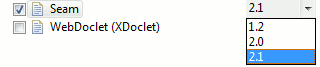
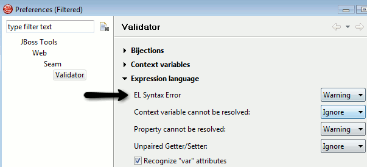
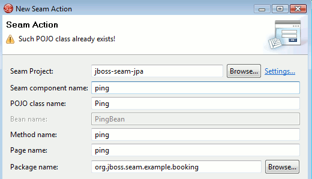
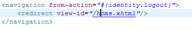
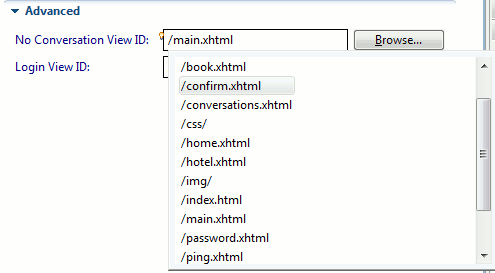

Projects
It is now possible to use the facet preferences to uprade or downgrade your projects Seam version.
The update is a "best-attempt" that will adjust the libraries, Seam facet and runtime version, but configuration files that refer to the old version will have to be manually updated.

There is now a Seam 2.1 runtime option and the components.xml editor supports the new XSD for Seam 2.1

The WAR generated for EAR's is now configured to utilize Seam hot-deployment (WEB-INF/dev) similar to standalone WAR projects.
To align with seam-gen in Seam 2.1 naming of source path's, action is now hot and model is now main. The reason being that hot and main better described what the folders are used for.
The Open Web Browser action is now directly available in the Seam perspective.

Validation
There is now a preference for setting severity of EL Syntax check to Error, Warning or Ignore.

The valdiator now checks if the runtime matches with the version referred to in components.xml, i.e. runtime is Seam 2.0, but components.xml refers to Seam 2.1
The various Seam action,form,etc. wizard now warns if the wizard will generate a class or page that already exist.

Use of project names with spaces now work since we now escape the related package names.
<framework:entity-query name="postList" ...> is now recognized as a EntityQuery component making code completion aware of it methods/attributes.
Pages Editor
Nodes in graphical pages.xml can now be directly deleted by using the Delete key.
When referring a page node you can now browse for existing pages.

EL and Page Id's can now be navigate to directly via OpenOn's from source page.

EL references is now code completed in the source tab of pages.xml. The graphical node now also provides code completion for page id and EL expressions..
